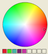
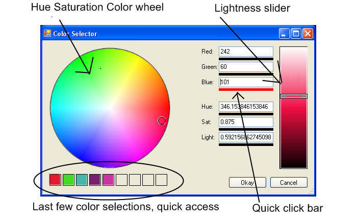

Source Code and Performance Metrics
landenlabs.app@gmail.com
Linkedin: http://www.linkedin.com/pub/1/119/293
Updated: 29-Dec-2009
|
Welcome to Dennis Lang's Source Code and Performance Metrics
landenlabs.app@gmail.com Updated: 29-Dec-2009 |
|  |
Download:
|

TopModular UI components:
- Hue,Saturation color wheel
- Brightness bar
- RGB and HSL numeric boxes (with click and drag slider bar)
- Last few colors selection boxes
Last few colors saved to registry Resizable dialog Standard event callbacks when values change